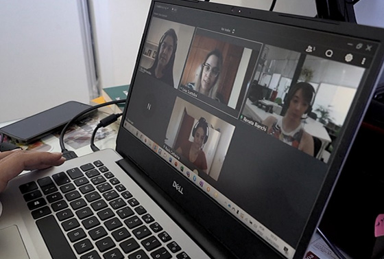

A necessidade de distanciamento social para conter a disseminação do novo coronavírus está gerando distúrbios no mercado de trabalho.
Enquanto alguns brasileiros tiveram suas atividades suspensas, outros serão obrigados a trabalhar de casa pela primeira vez.
O chamado home office pode ser um desafio para funcionários e gestores, preocupados em não trabalhar demais nem serem atraídos pelas muitas distrações que seus lares oferecem.
"É uma situação bem extraordinária, que costuma exigir uma capacitação mais demorada nas empresas", diz André Brik, consultor especialista em trabalho remoto do Instituto do Trabalho Portátil.
A BBC News Brasil ouviu especialistas e reuniu dicas para se adaptar mais rápido à nova rotina:
Encontre um espaço em sua casa que possa servir como escritório nas próximas semanas.
"Nem todo mundo pode ter o privilégio de um cômodo separado para trabalhar, que é o ideal", diz André Brik.
Escolha um lugar que seja sempre seu canto de trabalho e, se dividir a casa com outros, fique o mais longe possível da rotina do lar.
Isso ajudará a sinalizar para sua mente e para os que estão ao seu redor que, enquanto estiver neste espaço, você está trabalhando.
É preciso também pensar no conforto, tanto para a saúde como para a produtividade. Um assento confortável e um apoio para o computador (mesmo que seja improvisado com livros) são básicos.
David Barke, professor sênior da The School of Life no Brasil e em Londres (Inglaterra), sugere fazer pequenos experimentos para descobrir onde você gosta de estar na sua casa.
"Onde a luz é boa? Onde você se concentra melhor? Mova os móveis para testar — essa é a beleza de estar trabalhando de casa, você pode experimentar. Pode também decidir se gosta de trabalhar com música ou não, por exemplo."
Para quem tem filhos, vale conversar com a família e combinar algumas regras de convivência. Brik diz que é importante mostrar que, embora presente, você não estará disponível em alguns momentos do dia.
"Algumas sinalizações podem ajudar. Dizer, por exemplo: 'Quando estou com os fones de ouvido, ou meu crachá pendurado no pescoço, não posso ser interrompido'", afirma.
Link para o vídeo da materia Link.
Coronavírus: especialistas dão dicas para trabalhar de home office
Uma das vantagens óbvias de trabalhar em casa parece ser o fim da necessidade de se vestir e arrumar para ir ao escritório. O pijama, porém, pode acabar prejudicando a nova rotina, dando a impressão de que não se está, de fato, no trabalho.
"Pijama não dá, vai interferir na sua autoestima, você vai se enxergar como uma pessoa menos profissional", diz Brik.
Mantenha os hábitos que tinha quando era necessário sair de casa: tome banho no horário usual, vista-se apropriadamente, faça o café da manhã como sempre.
Ajude sua mente a entender a diferença entre estar em casa ou trabalhando. David Baker, da School of Life, sugere que se crie um ritual para começar e terminar as funções do dia. "Nós, humanos, precisamos de rituais para marcar as fronteiras. Em geral, o que faz isso é o transporte até o trabalho — é como se estivéssemos recriando esse deslocamento."
"O que funciona para mim é arrumar o meu espaço antes de começar a trabalhar todos os dias. Eu coloco as coisas no lugar, limpo, tento até aspirar o chão do cômodo", afirma.
"Essas ações me dizem que eu estou começando o meu dia. E no fim do dia, para tirar da minha frente tudo o que tem a ver com trabalho, guardo tudo e também passo o aspirador de pó."
Defina, em conversa com seus gestores, um expediente, para que tenha um horário para iniciar e terminar suas funções todos os dias. Isso também ajudará a demarcar as fronteiras entre trabalho e descanso.
Comece o dia organizando uma lista de afazeres.
David Baker sugere utilizar a matriz de Eisenhower — uma conhecida ferramenta de produtividade — para organizar suas prioridades. Ela consiste em dividir o que precisa fazer em quatro grupos:
"Quase nada é urgente e importante. Essa pode ser a nossa sensação inicial, mas com certa análise você percebe que não é bem assim", diz Baker.
O truque é distinguir entre o que é urgente e/ou importante e saber o que fazer com cada coisa.
O modelo sugere as seguintes ações:
Quando fizer uma de suas tarefas, risque-a de sua lista. De acordo com o especialista, há um prazer e um efeito psicológico positivo em ver as coisas sendo feitas ao longo do dia.
André Brik lembra que a autogestão é essencial no home office, já que ninguém estará sendo monitorado de perto por seus superiores.
"As pessoas precisam parar de ser movidas a chefe. É precisa ter produtividade, saber o que você precisa entregar e em que prazo."
Joana Story, professor-adjunta da Fundação Getúlio Vargas, lembra que também os gestores precisam se lembrar de que os funcionários estão em uma rotina diferente da habitual.
"Em vez de monitorar se as pessoas estão trabalhando, o ideal é monitorar se elas estão conseguindo fazer" o que lhes foi pedido, afirma.
No escritório, pausas ao longo do dia acontecem de forma natural. Coisas como sair para almoçar com os colegas, pegar um café ou fazer uma pausa para comer uma fruta nos ajudam a sair temporariamente da frente do computador.
Em casa, porém, os estímulos externos à pausa cessam. Por isso, é preciso organizar-se para fazer pequenos intervalos ao longo do dia — além de separar uma hora para o almoço ou jantar.
"Nosso cérebro precisa de uma pausa em média a cada 50 minutos de trabalho", diz David Baker. Faça, então, um intervalo de 10 minutos a cada hora. O tempo pode ser usado, por exemplo, para fazer um café e comer algo, para se alongar ou caminhar um pouco dentro de casa.
Esses intervalos também podem ser usados para utilizar o celular, responder a mensagens no WhatsApp ou acessar redes sociais, o que deve ser evitado durante o horário de trabalho.
A tendência é que, conforme a solidão aumenta, as pessoas passem a recorrer cada vez mais às ferramentas de comunicação virtual.
"Se você quebrar o se fluxo de trabalho não vai ser produtivo, vai levar cinco vezes mais tempo para fazer as coisas", afirma o professor da School of Life.
No final do século 19, [o filósofo] Henry Thoreau afirmou: 'Os homens se tornaram as ferramentas de suas ferramentas'. E acho que é isso que estamos fazendo com os nossos telefones", diz.
"Todos nós temos martelos em casa, mas não ficamos preocupados em achar pedaços de madeira em que usá-lo todos os dias. Use, então, seu telefone deste jeito, quando você precisar dele."

Joana Story, da FGV, ressalta que é necessário que funcionários e gestores ajustem suas expectativas.
"É muito importante aceitar o que é possível fazer de casa e o que não é; porque as pessoas tendem a achar que vai ser igual, e não é", diz.
Ela orienta os empregados a se comunicarem melhor e serem mais diretos com os seus empregadores.
Do lado dos gestores, é importante dar o treinamento adequado para que as pessoas se sintam confortáveis no home office, além de rever metas, quando necessário.
Estar em contato frequente com os funcionários também é essencial.
"O gestor tem que aprender a confiar, e o colaborador deve ser proativo para conseguir realizar as atividades sem ninguém cobrando do lado", diz André Brik.
É preciso lembrar ainda que a ansiedade e o estresse aumentam em tempos de incertezas, lembra Joana Story.
Diante de todas as notícias sobre a pandemia, é importante aceitar essas emoções, ela diz. "Tente monitorar o que está sentindo e evite o isolamento virtual."
"Quando pensamos numa ameaça futura, a gente tende se concentrar nas partes boas, tende a ser otimista. Mas haverá momentos em que nos sentiremos sozinhos, ou ansiosos", afirma Baker.
Segundo ele, a filosofia estoica traz boas lições para passar pela crise. "No mundo moderno, quando alguém diz: 'Se X acontecer, não conseguirei lidar com isso', nossa tendência é tranquilizá-lo e afirmar que X não vai acontecer", diz.
"Mas os estoicos diriam que isso é inútil. O que precisamos é dizer: 'Se isso acontecer, você vai sobreviver'."
A notícia pode ser acessada através do link.